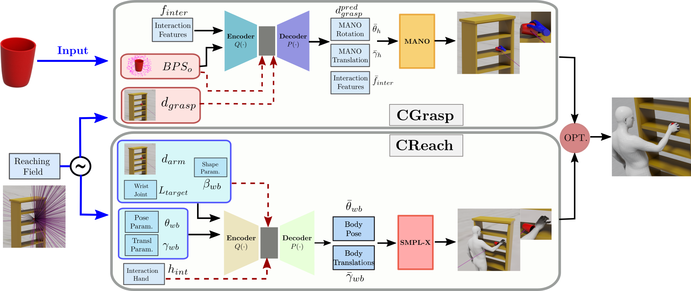
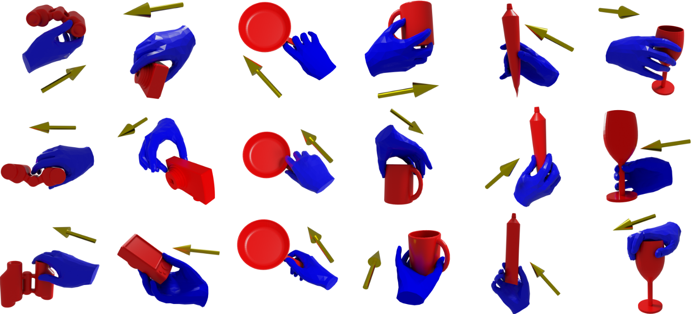
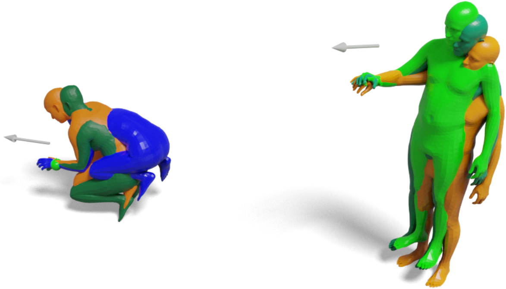

We develop CWGrasp, a novel framework for synthesizing 3D whole-body grasps for an object placed on a receptacle.
Our framework capitalizes on a novel combination of geometric-based reasoning and controllable data-driven synthesis
methods. By adding a novel controllability in the synthesis process, we achieve realistic results at a fraction of
the computational cost w.r.t. the state of the art.
Abstract
Synthesizing 3D whole-bodies that realistically grasp objects is useful for animation, mixed reality,
and robotics. This is challenging, because the hands and body need to look natural w.r.t. each other,
the grasped object, as well as the local scene (i.e., a receptacle supporting the object). Only recent
work tackles this, with a divide-and-conquer approach; it first generates a "guiding" right-hand grasp,
and then searches for bodies that match this. However, the guiding-hand synthesis lacks controllability
and receptacle awareness, so it likely has an implausible direction (i.e., a body can't match this without
penetrating the receptacle) and needs corrections through major post-processing. Moreover, the body search
needs exhaustive sampling and is expensive. These are strong limitations. We tackle these with a novel
method called CWGrasp. Our key idea is that performing geometry-based reasoning "early on," instead of
"too late," provides rich "control" signals for inference. To this end, CWGrasp first samples a plausible
reaching-direction vector (used later for both the arm and hand) from a probabilistic model built via
raycasting from the object and collision checking. Then, it generates a reaching body with a desired arm
direction, as well as a "guiding" grasping hand with a desired palm direction that complies with the arm's
one. Eventually, CWGrasp refines the body to match the "guiding" hand, while plausibly contacting the scene.
Notably, generating already-compatible "parts" greatly simplifies the "whole." Moreover, CWGrasp uniquely
tackles both right- and left-hand grasps. We evaluate on the GRAB and ReplicaGrasp datasets. CWGrasp
outperforms baselines, at lower runtime and budget, while all components help performance.
Method Overview

We first sample a plausible reaching direction from ReachingField. Next, we condition both CGrasp and
CReach on this direction and obtain a hand and a body, respectively, that satisfy the sampled direction.
Finally, we include an optimization stage to resolve possible penetrations with the surrounding object,
while also making the hand and the body arm fully compatible. With our framework, we generate both left-hand
and right-hand grasps.
ReachingField
ReachingField formulation for a "low-height" object
ReachingField formulation for a "medium-height" object
ReachingField formulation for a "high-height" object
Visualization of how the ReachingField is built for objects on various receptacles at different heights. First, we define a spherical grid around the object and cast rays from the center of the object to all points in the grid. We apply a series of collision tests to all the rays, and from those that pass all tests, we build a probabilistic 3D vector field, called the ReachingField.
CGrasp (Controllable Grasp)

Using CGrasp, we can generate grasping hands that interact plausibly with various objects while satisfying a given grasping direction. In the examples above, the blue hands grasp the red objects realistically, following the directions indicated by the corresponding golen arrows.
CGrasp (Controllable Grasp)

Using CReach, we can generate bodies that reach a target wrist or object location with either the left or right arm, while the arm maintains a desired direction, shown with a gray arrow in the examples above. In these examples, we demonstrate grasping hands that interact plausibly with various objects while satisfying a given grasping direction.
Optimization
CWGrasp Optimization
FLEX Optimization
We depict how the optimization process works both for CWGrasp and FLEX for the same scene. FLEX samples 500 random pairs of bodies and hands that are optimized together. In this visualization, we depict the best pair. In the first stage of the optimization, the body is far from the object and, as the optimization proceeds, approaches the object and finally grasps it. However, the final result lacks realism. Oppositely, CWGrasp, by leveraging ReachingField, samples just 1 body and hand, with the body being close to the object from the beginning. The optimization is around 16x faster than FLEX and produces more realistic results.
Qualitative results
Right-Hand interactions
Low-height object
CWGrasp
FLEX
CWGrasp
FLEX
Medium-height object
CWGrasp
FLEX
CWGrasp
FLEX
High-height object
CWGrasp
FLEX
Left-Hand interactions
BibTex
@inproceedings{paschalidis2025cwgrasp, title = {{3D} {W}hole-Body Grasp Synthesis with Directional Controllability}, author = {Paschalidis, Georgios and Wilschut, Romana and Anti\'{c}, Dimitrije and Taheri, Omid and Tzionas, Dimitrios}, booktitle = {{International Conference on 3D Vision (3DV)}}, year = {2025} }